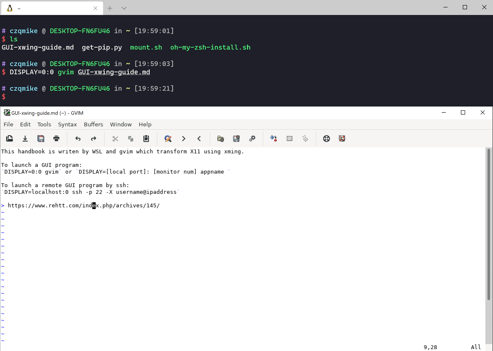

通过WSL远程使用Linux上的GUI程序
本文最后更新于：39 分钟前
写在前面水字数
好久没有水文章了，一半是因为这个学期学业繁忙，论文改的焦头烂额的。另一半就是人的惰性了。
最近沉迷于Veritasium真理元素的视频，里面讲了不少物理数学方面的有趣现象和说明，感觉质量还是挺高的，在此推销一波~
正题
直接进入正题。为了在远程环境上看到Python脚本画出来的图，以前我都是使用plt.savefig(...)保存成图像再看。
今天尝试nltk的自然语言处理库时发现其中自带的画图函数好像不支持保存，Stackoverflow上的方法要先把图画出来->保存成ps矢量图->再用工具把矢量图转化成位图，这样才能在VsCode中看到输出的图像。。
我的洁癖+懒惰症第一时间就让我打消了这个念头，而且也不优雅。
然后我就开始寻找更直接的方法–对，就是直接在Win上使用Linux的GUI程序。
之前实习的时候看师傅做过一次，也是用的WSL调用了一个GUI程序。
在网上搜了一下，发现和我一样闲并且有强迫症的人还真不少。😃
效果如下：

大致上分为两个步骤：
-
- 服务器端配置X11转发。
-
- 客户端配置X11接收程序，将其转化为界面。
服务端配置
这里的服务端指的是Linux的桌面发行版，并且默认你已经配置好了SSH连接。
首先在服务器上将/etc/ssh/ssh_config中的以下参数设为下列值。
1 | |
这样SSH就可以转发X11信号了。
注意在连接SSH的时候一定要指定-X参数，确认使用X11，即
ssh -p 22 -X username@ipaddress
客户端配置
客户端是Windows（Mac OS和其他Linux应该也可以）。
首先下载一个Xming，安装时把Xlaunch也装上，配置就next一把梭。此处略过。
唯一要注意的是要记得显示器编号 (默认是0)，后面会用到。
先启动Xlaunch一把梭后，系统栏里会有个小小的X图标，即代表Xming启动了。
我们只要使用
DISPLAY=localhost:0 ssh -p 22 -X username@ipaddress
来远程登录，登录后就可以直接输入GUI命令，比如：GVim，FireFox等。
不过远程嘛，你懂的。。延迟一般都比较高，体验被命令行完爆。
但是比较一个比较有用的做法是直接在Win上使用WSL的GUI:
DISPLAY=0:0 gvim
DISPLAY的前一个参数应该是local port， 后一个参数是显示器编号。
通用的命令如下：
DISPLAY=[local port]: [monitor num] appname
这种方法我认为比虚拟机上的体验还要好，因为不用同时跑两个系统。本质上来讲，WSL是套了Linux壳的Win，然后X11是用Linux的绘图标准来绘图，也就是说，相当于只跑了一个系统但是能够同时享受到两个系统的优势！
Ref
本博客所有文章除特别声明外，均采用 CC BY-SA 4.0 协议 ，转载请注明出处！